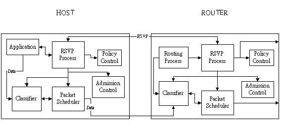
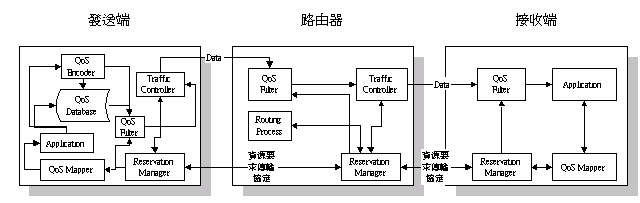
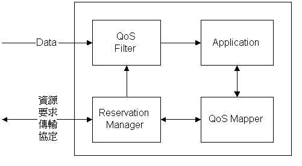
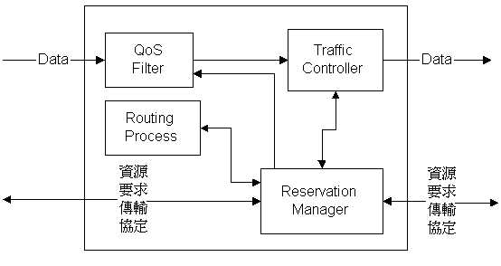
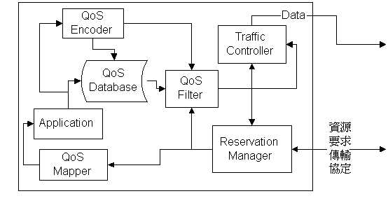
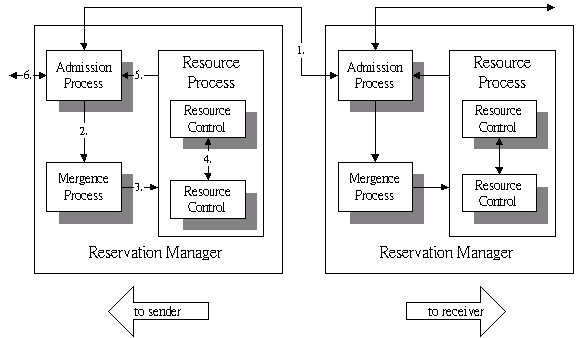
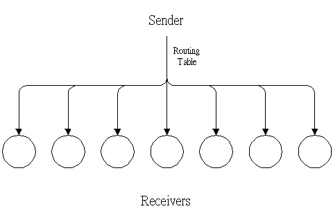
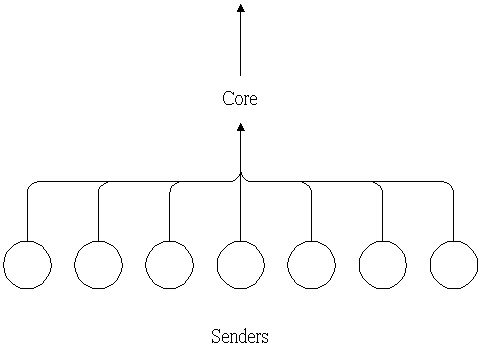
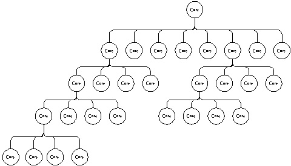
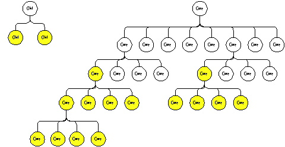

- A Summary for RSVP
- (Resource ReSerVation
setup Protocol group)
網路QoS保障架構
RSVP是指能對於網路上的Request做一個合理分配之協定，我所參考之報告中是以QoS(Quality
of Service)之方式對於資源做一個合理範圍之限定，使某幾項資源可以維持一定之品質。
而傳統之QoS架構下的RSVP實作架構如下圖：

其中包含六種主要元件：
- RSVP Process：負責整個Resource Reservation過程的傳輸協定及路由器內各個模組之間的協調。
- Policy Control：負責判斷Resource Reservation的要求是否被允許(存取控制、Accounting等)。
- Admission Control：負責判斷網路資源是否夠用。
- Riuting Process：找出從接收端至發送端之間的路徑。
- Classifier：負責判斷資料要傳遞之對象。
- Packet Scheduler：用來控制資料傳送及管理網路資源的使用。
整個Resource Reservation過程是由接收端所啟動，並由接收端指定所要的QoS，該QoS需求包含兩個規格：Flow
Spec及Filter Spec，分別是『用以存放與所要傳的資料傳輸行為有關之參數』及『用來區分哪些資料是屬於這個資料連線的』，兩個規格合稱Flow
descriptor。
參數設定好了以後，接收端便送出一個要求至發送端，期間所經過的每一個RSVP
Process便將該要求送給Admission Control及policy Control審核。否則便將Flow
Spec送給packet Scheduler即將Filter Spec送給Classifier做設定。然後將該要求繼續往發送端送，等要求到達發送端後便完成整個Reservation的過程。
該報告書對於以上架構之實作目標及因應對策：
- RSVP中之Classifier及Packet Scheduler已有許多現成成果，並可將之合稱為Traffic
Controller。
- 將RSVP Process及Admission Control合為Reservation
Manager以方便設計，此外，並於Reservation
Manager中加入範圍式的QoS參數，且提供Re-negotiation的彈性。
- 於Routing Process部分將自行設計一支援QoS的Multicast
Routing策略來支援Multicast的應用。
- 為充分利用Multicast來節省網路資源，加入了QoS
Filter模組。主要作用是可以針對一個發送端要送同樣資料給不同QoS要求之接收端時，可以再傳送時只送一份，直到資料傳送到了兩個接收端路徑之分支處，才利用QoS
Filter將原資料分成不同QoS等級之兩份資料。
- 該計劃並不將Policy Control部分納入，因其工作為權限設定及Accounting。與整體系統之設計較無直接關係。
該計劃所設計之網路QoS架構如下圖：

一、接收端
接收端架構放大如下：

主要部分有：
- Application：即要求資源之應用程式。
- QoS Mapper：負責將應用層的QoS參數轉換成網路層的QoS參數，以要求網路資源；若資源要求不成功則將網路可提供的網路層QoS參數轉呈應用層QoS參數，以告知應用程式。
- Reservation Manager：負責Admission
Control及Resource Reservation。
- QoS Filter：於接收端，所收到的資料可能不符合應用程式的QoS需求，故可透過該元件將收到之資料轉成適當之QoS等級後才能提供應用程式使用。
二、路由器
路由器架構放大如下：

主要部分有：
- Reservation Manager：同接收端之Reservation
Manager，不過還必須與Routing Process溝通以取得發送端路徑之下一個路由器位置。此外，當資源配置完成後，它還得通知QoS
Filter及Traffic Controller讓其產生適當的資料及藉以控制交通量。
- Routing Process：找尋最符合所要求之Unicast或Multicast路徑，並將該路徑提供給Reservation
Manager，作為資源要求用。
- Qos Filter：負責將進來的資料轉成符合各輸出埠所要求的QoS的資料，因此一份資料可能產生許多份不同的QoS資料。
- Traffic Controller：負責將QoS Filter送進來的資料依資料特性及輸出埠分類，然後將分類好的資料依照其QoS等級來做工作排程，以提供每個資料連線其所要求之服務品質。此外，還必須將網路資源的使用情形傳給Reservation
Manager，藉以了解目前網路資源的使用情形。
三、發送端
發送端架構放大如下：

主要部分有：
- Reservation Manager：除啟動相對之Application以提供使用者所需服務外，其餘則與路由器上的Reservation
Manager一樣。
- Application：提供使用者服務之相對應用程式。
- QoS Mapper：負責將網路層之QoS參數轉成應用層之QoS參數以告知應用程式。
- QoS Encoder：負責將資料壓縮並轉成適當格式存入資料苦衷或將即時視訊送給接收端。
- QoS Database：可提供多媒體資料之資料庫，其資料儲存格式與QoS
Filter設計有關。
- QoS Filter：負責將資料轉換成符合所要求之QoS之資料。
- Traffic Controller：管理發送端對外之交通量並反應目前網路資源使用情形給Reservation
Manager。
Reservation Manager
一、Mergence
Process
針對相同之資料源，把預約請求範圍有重疊之部分加以合併，以減少網路傳送時的資料量，即為此一部份之工作。以目前之Multicast實作方法而言，相差不多之QoS範圍之下，仍必須送出數份資料，現在的工作便是將相差不多之資料加以合併，一次送出，至於合併之方式則舉例如下：
有三個不同範圍但相似之需求：m1(50,25)、m2(60,20)、m3(70,40)，其兩個座標值分別為(最佳品質需求,可容忍之誤差)，所以m1之需求為25~50，m2之需求為40~60，m3之需求為30~70，所以三者都有重疊之部分，欲將之合併以下為方法之一：
將所有需求之最佳品質最高者取出，以此一例即為70，再將最低品質之最高值取出，此例中即為40，則合併後之總需求為40~70，如此一來所有需求之最佳品質皆於此一範圍內，且品質都於可容忍之品質之內。
當然，上述之方法為眾多方法之一，仍有許多其他方法存在。
然而，此一部份仍待解決之問題主要有二：
- grouping之方式：即如何選擇QoS Range加以合併，也就是QoS
Range之規格設計。
- merging之方式：決定如何合併後，需發展出實際可用之演算法。
二、Resource
Process
此部份有兩個模組：
- Resource Control：平時紀錄其所擁有的資源，而當有新的請求時測試所剩的資源是否足夠，並記錄且保留已達成預約者之要求，以確保其傳送之服務品質。
- 一般之資源分配管理採『固定值』方式，也就是說夠就給，不夠就不給。
- 此一計劃以『QoS Range』之方式，則可於資源不足時，重新以所設之QoS
Range再一次分配資源，將原有工作之品質稍微降低，使所有工作都能進行，此依方式可增加連線個數並提高網路使用量。
- Negotiation Control：當有新的請求提出，而網路資源不足之時，此一模組及負責與已存在之使用者或工作協調，降低已存在者之服務品質，以提高後來之連線能成功接受之機會。
- 協調上的取捨則可對當時佔用最多資源之使用者下手，將其所佔資源量降低，但如此一來會使該使用者無法適應突來之變化，但若協調所有使用者則會增加許多通訊與計算上之負擔，所以這一部份正是要好好考量的地方。
- 而當接收端使用者改變其QoS Range時，系統也需再一次進行Re-Negotiation動作。
三、Admission
Process
此部份負責之功能如下：
- 設計一適當的通訊協定，負責每一個node間之Reservation
Manager溝通，收送reservation message。
- 再Reservation Manager內部，協調各功能模組運作，依據其他模組織運作結果，回應接收端之請求是否能被接受或拒絕。
當應用程式對QoS系統作出請求時，其Reservation
Manager內各模組及Reservation Manager間之關係如下圖所示：

而上圖之運作簡述如下：
- 接收端經由Reservation Protocol向Admission Process發出預約訊息；
- 當請求有重疊時，通知Mergence Process做合併動作；
- 合併完成向Resource Control要求resource；
- 若當時資源不足，則Negotiation Control必須以heuristic(啟發式的)方法來協調降低以連線者的品質；
- Resource Process回應是否接受其請求或是被拒絕；
- 接受請求，循序往上層之Reservation Manager送出請求，反之，送出拒絕訊息給原請求者。
QoS-Based Multicast Routing
傳統之Multicast
Routing Algorithm
- Source Based Tree：
- 定義：以Sender為樹根並以最短路徑傳送資料至所有的Receiver，如此便可找到從Sender至各Receiver之間的最短路徑。
- 缺點：會了達成目的，每個Router必須儲存許多Routing
Table，所以其擴充性較差。
- 例圖：

- DVMRP(Distance Vector Multicast Routing Protocol)：為使用Source
Based Tree之一種Algorithm，利用Boardcast加上Time
To Live(TTL)限制之方式來傳播資料，故不想接收資訊之Router雖可提出拒絕指示，但一段時間後又會再度收到訊息。
- MOSPF(Multicast routing extensions to OSPF)：這也是一種以Source
Based Tree為基礎的Algorithm，但其中加強了整個網路Topology及群組資訊之維護，以致除了Routing
Table大，Router間的資訊交換造成了網路額外之負擔，尤其當群組成員不多時最明顯。
- Core Based Tree (CBT) (Shared Based Tree) ：
- 定義：CBT由A. J. Ballardie等人提出，是一種使用Shared
Based Tree來連接所有群組成員之方法，它定義了一個Core作為Tree的Root，每個群組成員都必須建立連線至Core。傳送資料時，只需資料往將Core送，Core便會將資料傳遞給該Tree下之每一個成員，已達成Multicast的目的。
- 優點：由於只需為一個群組建立一個Tree，故針對一個群組，Router只需儲存一個Routing
Entry，如此便可解決擴充性的問題，也不至因控制訊息之需求而浪費太多網路資源。
- 缺點：一個群組只使用一個Tree，會導致資料過度集中於Tree的路徑上！！
- 例圖：

- 改進：Dynamic CBT：為解決問題，後來又提出動態CBT之想法，將資料量大之資料生產者當成一個臨時之Core，以產生Source
Based Tree來分散資料量。
- PIM (Protocol Independence Protocol) ：
- 來由：群組使用者佈滿網路時，稱之為Dense
Mode，反之稱為Sparse Mode。Dense Mode下使用Source
Based Tree為佳(因不易決定何者為Core)，Sparse
Mode下使用Shared Based Tree為佳(可為較集中者設一個Core)，故Stephen
Deering根據此一論點提出折衷方案，稱之為PIM。
- PIM針對不同情形提供了兩種模式，其中PIM-Dense
Mode適用於群組使用者遍佈整個網路之情形，其做法相當於DVMRP。
- 至於PIM-Sparse Mode則以RP法達成，顧名思義便是設定一個RP(集會點)，RP就如同Core一般，只是RP會依照QoS之要求來使用不同之方式向下一個傳送點送資料：若資料量超過臨界值，則建立一個最短路徑至下一個傳送點，並一直使用該路徑，反之，則將RP視為Core以Core
Based Tree之Algorithm達成要求！！
- CBT與PIM之問題：
- 群組為Sparse Mode時，CBT之Data Transfer
Time較長(非Shortest Path)，尤其當範圍大時更明顯。
- 當資料量大時，雖可使用PIM-Sparse之方式產生一些Source
Based Tree來分散資料量，但會產生Source
Based Tree之缺點：Routing Table太大。
- 對於QoS隻支援：只有MOSPF已有支援QoS，其他皆無支援。
QoS Multicast
Routing之初步架構
- 該專案計劃：
- 以Core Based Tree之Multicast Routing Algorithm為基礎。
- 為解決其Delay大及交通量過度集中之缺失，於每一小區域內設一個Core，而每一小區域可找出該區之Core已行程一個Core
Based Tree。
- 若有一群組跨越數個小區域，則可視當時的交通量及群組所要求的Delay來決定：
- 使用一跨各子區域之Core來產生一個新的Core
Based Tree。
- 使用特殊設計之資料傳遞方法來讓那些Core之間互相交換資料以減少Delay及資料過度集中之問題。
- 實際做法：
- 於一Domain中制定一Core Tree，於Core Tree中之每一個節點為負責特定區域之Core，而每一節點之子節點則是負責上一節點Core所負責特定區域再細分後之一子區域之Core。
- 例圖：

- GM Tree：
- 為便於管理網路群組之行為及網路上可用之資源，設計了一種Group
Manager(GM)來管理其區域內之所有群組。
- 為分散GM負擔，並提出GM Tree之想法。
- GM Tree中之每一個GM負責其區域內Core
Tree及GM之管理，而Root之GM當然是管理整個Tree。
- 例圖：

- 於Dense Mode時，可使用涵蓋所有群組成員之Core，以減少Total
Cost。
- 於Sparse Mode時，使用較下層之Core已減少傳輸延遲及分散集中情形。若最下層之Core負擔仍中，則可結合CBT
or PIM以改善之。
- 待解決的問題：
- 如何見夠Core Tree：於每個區域設定一個Core以得一Core
Tree，當然，最好是能有一Algorithm自動求出最適合之Core。
- Core與Core之間的資料傳遞方式：
- Core接到Data後，使用Unicast將資料傳給其他Core。
- 使用一些Hyper Cube上之Broadcast方法將資料傳給每個Core。
- 使用一些Star Graph上之Broadcast方法將資料傳給每個Core。
- Group Maintance：需考慮以下動作：
- 啟始一個群組。
- 成員加入。
- 成員離開。
- 結束一個群組。
- GM管理與QoS System結合之部分：
- Group之管理。
- Core之管理。
- 所屬範圍內，Core之監督方法。
- 成員加入後，Core之選擇方法。
- 如何與QoS系統結合。